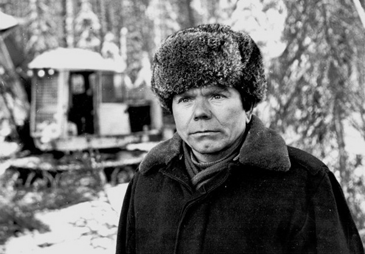

Благодаря рекордам и самоотверженному труду Павла Васильевича о небольшом таёжном посёлке узнала вся страна. Его жизненный путь стал напоминанием о том, что величие города измеряется прежде всего людьми, которые в нём трудятся.
Попов Павел Васильевич
Дважды Герой Социалистического Труда (1932–2007)
Единственный в лесной промышленности СССР дважды Герой Социалистического Труда, лауреат Государственной премии СССР и заслуженный работник лесной промышленности РСФСР. Приехав в Комсомольский в 1963 году, он стал живой легендой и символом трудовой славы Югорска.

Трудовой подвиг и награды
2 звезды
Высшее отличие
Удостоен звания Героя Социалистического Труда в 1973 и 1986 годах. Награждён четырьмя орденами Ленина и орденом Трудового Красного Знамени.
100 тыс. м³
Рекорды бригады
С 1964 года возглавлял лесосечную бригаду, ставшую инициатором всесоюзного движения за заготовку 100 тысяч кубометров леса на бригаду.
Школа опыта
Наставник страны
На базе его коллектива в Комсомольском действовала всесоюзная школа передового опыта, где учились лесозаготовители со всего СССР.
Память
Гордость Югорска
Именем П. В. Попова названа улица в Югорске, в 2010 году установлен бронзовый бюст, а его имя увековечено на Аллее Звёзд в Ханты-Мансийске.